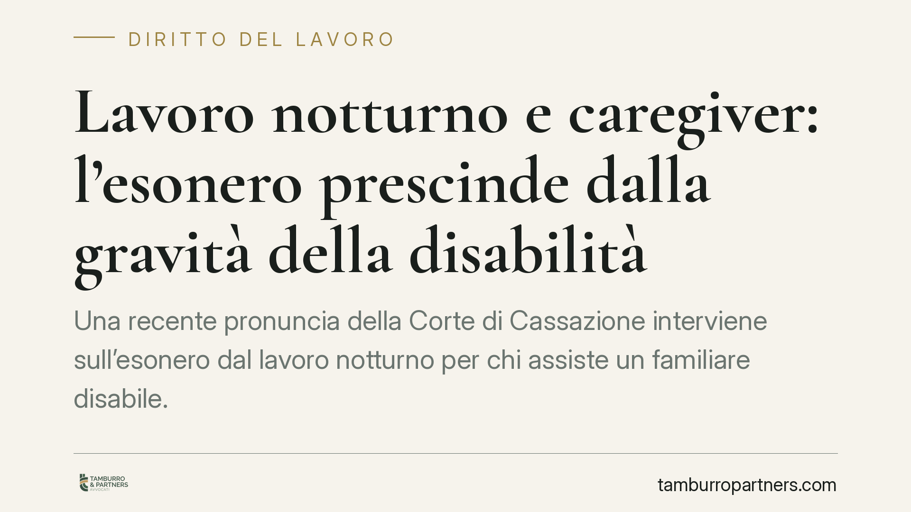

Lavoro notturno e caregiver: l'esonero prescinde dalla gravità della disabilità
Una recente pronuncia della Corte di Cassazione interviene sull'esonero dal lavoro notturno per chi assiste un familiare disabile. Il principio: il diritto spetta a prescindere dal grado di invalidità, senza che occorra la disabilità grave. Una lettura che amplia la tutela del lavoratore caregiver e impone ai datori di lavoro una gestione più attenta della turnistica notturna.

Il caso
La questione affrontata dalla Corte di Cassazione riguarda il lavoratore che chiede di non essere adibito al turno di notte perché ha a carico un familiare con disabilità. Il nodo era se tale esonero dipendesse dal livello di gravità dell'invalidità del parente assistito o se spettasse comunque.
Secondo la Corte, l'esonero dal lavoro notturno va riconosciuto a prescindere dal riconoscimento della disabilità grave ai sensi dell'art. 3, comma 3, della Legge 104/1992. Conta cioè la funzione assistenziale che il lavoratore svolge, non la soglia formale di invalidità del familiare.
> Nota. Il numero esatto dell'ordinanza e la data di deposito vanno verificati nelle banche dati ufficiali prima di ogni utilizzo. In questa sede ci limitiamo a illustrare il principio di diritto, che resta l'elemento rilevante per l'operatore.
Inquadramento normativo
La disciplina del lavoro notturno è contenuta nel D.Lgs. 66/2003. L'art. 11, comma 1, individua le categorie di lavoratori che non sono obbligati a prestare lavoro notturno. Tra queste, la norma considera il lavoratore che abbia a carico un soggetto disabile ai sensi della Legge 104/1992.
Il punto interpretativo sta proprio nel significato di "disabile ai sensi della Legge 104". La lettura restrittiva ancorava l'esonero alla sola disabilità grave (art. 3, comma 3). La Cassazione opta invece per una lettura estensiva: la ratio della previsione è assistenziale, mira cioè a proteggere la cura della persona disabile, e questa esigenza non si misura sul grado di invalidità certificato.
È utile una precisazione: l'art. 11 distingue più ipotesi di esonero. La tutela riferita al lavoratore con familiare disabile va tenuta separata da quella prevista per la lavoratrice madre. In sede applicativa è opportuno verificare la lettera esattamente applicabile al caso concreto, perché i presupposti soggettivi differiscono.
Che cosa cambia in concreto
Per il lavoratore. Chi assiste un familiare disabile può opporsi all'adibizione al lavoro notturno anche in assenza del riconoscimento di disabilità grave. È però essenziale mettere a fuoco un limite: l'esonero riguarda il solo lavoro notturno e non si estende automaticamente ad altri istituti, in particolare ai permessi retribuiti della Legge 104, che restano soggetti ai propri distinti presupposti.
Per il datore di lavoro. La pianificazione dei turni notturni va rivista alla luce di questa lettura. Respingere la richiesta di esonero richiamando la mancanza della disabilità grave espone a un rischio di contenzioso. È consigliabile raccogliere e valutare la documentazione prodotta dal lavoratore con criteri coerenti e non discriminatori.
Sul punto, un eventuale trattamento penalizzante collegato alla condizione di caregiver potrebbe intersecare la disciplina antidiscriminatoria (in particolare il D.Lgs. 216/2003 in materia di parità di trattamento). È un profilo da valutare caso per caso, senza automatismi.
Cosa fare in concreto
- Lavoratore: formalizzare per iscritto la richiesta di esonero dal turno notturno, allegando la documentazione attestante la condizione del familiare disabile e il rapporto di assistenza.
- Lavoratore: tenere distinta la richiesta di esonero dal lavoro notturno dalle eventuali domande relative a permessi o congedi, che seguono regole proprie.
- Datore di lavoro: adottare una procedura interna uniforme per la gestione delle richieste, documentando le valutazioni svolte.
- Datore di lavoro: verificare la lettera dell'art. 11 D.Lgs. 66/2003 effettivamente applicabile alla singola fattispecie prima di assumere decisioni sulla turnistica.
- Entrambi: è opportuno esaminare le condizioni concrete del rapporto e la documentazione disponibile prima di opporre un rifiuto o di contestarlo.
In sintesi
Il messaggio della Corte è chiaro nella sua ratio: la tutela del lavoratore caregiver guarda alla funzione di cura, non alla soglia di invalidità. Resta ferma la natura circoscritta dell'esonero, limitato al lavoro notturno. La corretta gestione passa da documentazione ordinata e da una valutazione caso per caso.
---
*Contributo informativo a cura di Tamburro & Partners - Avv. Giuseppe Tamburro. Non costituisce parere legale.*
Ogni storia di lavoro ha i suoi tempi.
Se gestisci HR e vuoi un confronto su contenzioso, ispezioni o licenziamenti, scrivi allo studio. Ti rispondiamo entro un giorno lavorativo.